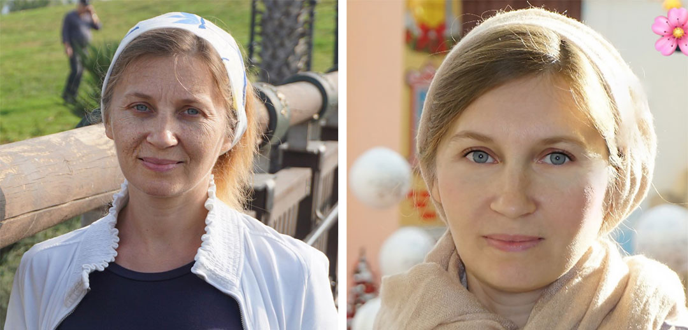
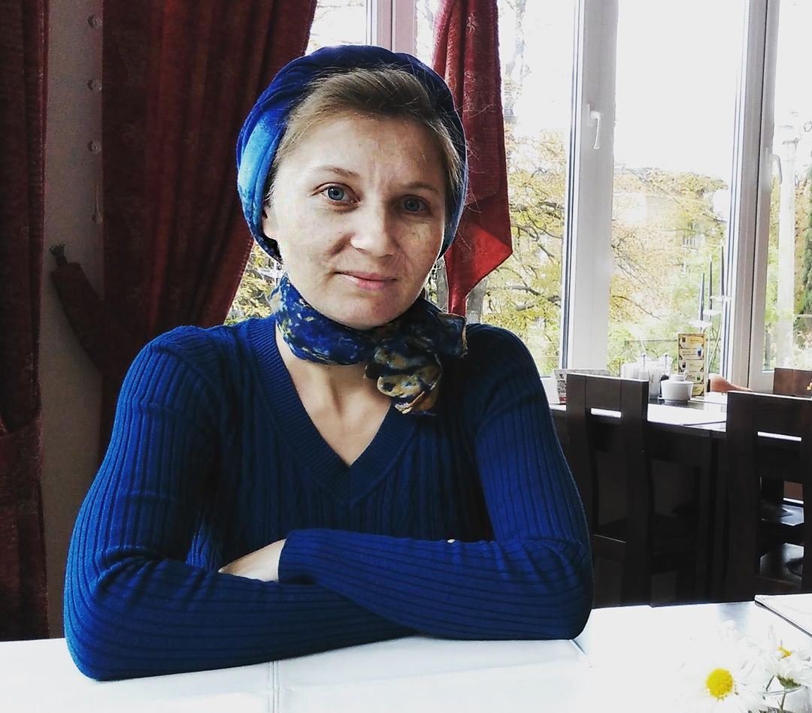
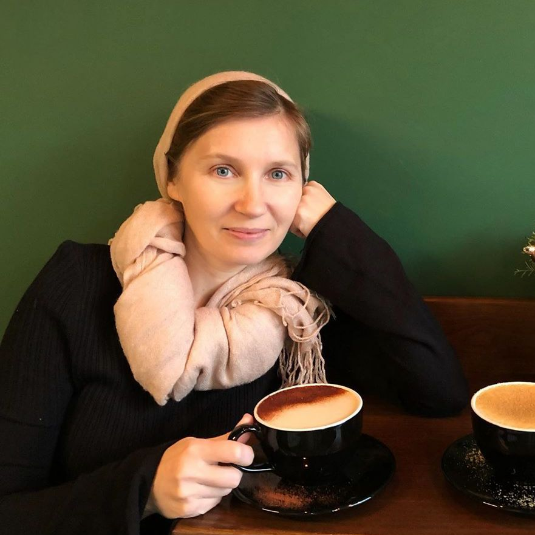
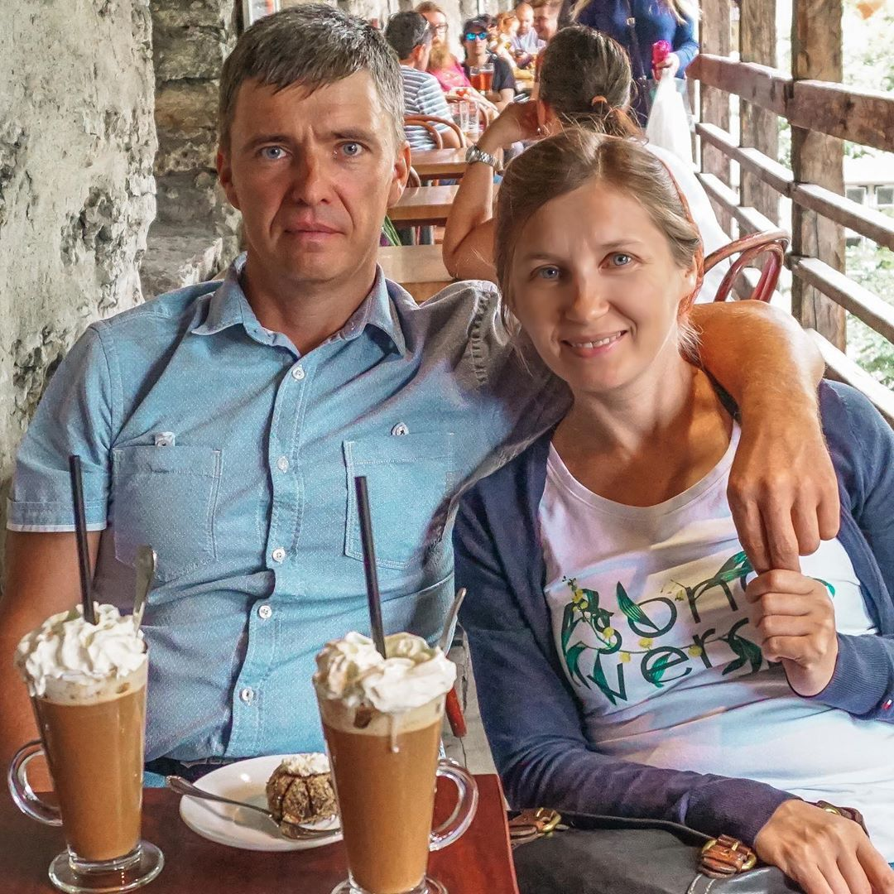

Dle občanky 47, v zrcadle 30. Moje tajemství mládí
Posledních pár měsíců do soukromých zpráv mi píšou otázky, a dokonce i požadavky, abych dokázala, že mi je skutečně 47 let. Už mě nebaví se vymlouvat, takže dnes chci tuto otázku uzavřít a zároveň říci, jak může kdokoliv z vás vypadat na 30, dokonce i s vnoučaty v náručí.
Na první fotce je mi 42, na druhé 47!
Zestárla jsem o měsíc
Měla jsem těžké manželství. Manžel zvláštního charakteru, první dítě ve věku 34 let, následovně druhé a třetí, a pak dlouhodobá deprese, kterou jsem léčila metodou „gaučových psychologů“ - alkoholu. Bůh se slitoval, nestala jsem se alkoholikem, ale to mi také nedalo krásu.
Mateřství pro mě bylo velmi obtížné. Nemohla jsem si dovolit chvíli odpočinout. Když byly děti vzhůru, hledala jsem různé způsoby, jak užitečně trávit čas: jednou rukou jsem vyřezávala Peppovo prase z improvizovaných materiálů, druhou vařila. Oboje se mi dařilo špatně.
Byla jsem si jistá, že nedělám všechno velmi dobře: málo věnuji času dětem, kuchařská díla jsem nepřipravovala, neudržovala jsem dokonalou čistotu, neuspokojovala jsem svého manžela jako žena. Manžel byl vždy nespokojený, děti se chovaly špatně a já jsem spala tři hodiny denně a nenáviděla jsem se zuřivou nenávistí.
Mít sebe ráda nebylo za co
Mladá atraktivní kráska, kterou jsem byla po celých 10 let po sňatku, na mateřské dovolené se proměnila v nechutnou housenku s černými modřinami kolem očí a na bradě jí „sklouzl“ úsměv.
Snažila jsem se vyhýbat zrcadel, dívat se na sebe bylo opravdu hrozné. Kromě nadváhy, se mi objevily vrásky: kolem oči, na čele, a dokonce i vedle rtů!
Nebyl problem se o sebe postarat a zajít ke kosmetičce. Můj manžel zajišťoval rodinu, zakázal mi pracovat, a já jsem podle jeho názoru žila v carských podmínkách. Nemohla jsem si ani dovolit snít o kosmetickém salonu: je to drahé, nic z toho nevyjde, „I tak je dobrý,“ jak to říkal můj manžel.
V 45 jsem vypadala na 75 a nenáviděla jsem se
Rozvod
Jednoho dne přišel manžel domu a řekl: „ Mám jinou ženu, odcházím pryč, nechám vám byt s dcerou“. Sbalil věci a odešel, rozvod byl později.
Kdo by mě tehdy inspiroval správnými myšlenkami: nechť jde do háje tento kretén, který tě změnil do nešťastného, rozbitého tvoru! Celé dny jsem si myslela, že já za to můžu, a tak jsem hodně zestárla a zhubla.
Kamarádka mi vrátila život
Jediný člověk, který mě podporoval, - je to Bára, kamarádka z dětství. Dávno žijeme v různých zemích, občas komunikujeme přes Skype a skoro se nevidíme.
Dobře si pamatuji den, kdy mě přišla navštívit bez domluvy s kyticí květin a lahví vína. Rozbrečela jsem se ze štěstí, protože si zvlášť vzala dovolenou a všechny své úspory utratila, aby za mnou na pár dní přiletěla a vytáhla mě z bažiny, ve které jsem se už dusila.
Za mládí jsme s Bárou hodně cestovaly po světě a byly jsme moc šťastné
Celou noc jsme si povídaly, skoro jsme nespaly. Ráno jsem vypadala jako královna slimáků: oteklá, nechutná a „koruna“ zamotaných vlasů. Bára zářila jako klenot: bez make-upu a stylingu nevypadala o nic horší než před 10 lety, když jsme se naposledy viděly.
“Jak se ti daří, takhle svěže vypadat?” – byla to rétorická otázka, ale Bára odpověděla: „Proto jsem přiletěla. Teď povím”.
Vytáhla z kabelky balení a podala mi ji poté, co jsem složila přísahu, že si tento produkt na obličej budu aplikovat minimálně dvakrát denně. Zasmála jsem se: „Je to omlazovací lektvar? Neproměním se v noci v žábu?“. Společně jsme se zasmály, že už to nebude horší, a šyi jsme pít čaj.
Bára mi pak vážně řekla, co to je za zázračný přípravek, a jak mě může zachránit. Její slova furt ještě mám v hlavě:
“Musíte být krásní ne pro svého manžela, ne pro schválení někoho jiného, ale pro sebe. Musíte se dívat do zrcadla a usmívat se. Chápu, že je to teď obtížné, ale pokud budeš poslušnou dívkou a začneš používat tento přípravek, jak jsem slibuji, všechno se změní. Vrásky jsou vyhlazeny, obličej se osvěžuje. Zase se do sebe zamiluješ. A pak se vše zlepší”.
Dřív jsem mohla jen o tom snít, aby takhle krásně vypadat!
Pak řekla, jak tento produkt funguje, o jeho mimořádné složení s extraktem Callisia a účinke, který ste mohly vidět na Marine: je Je stejně věků ako ja, ale vypadá o 20 let mladší!
Ani jsem nevěděla, že extrakt Callisie utahuje ovál obličeje a vrací pružnost na smutně visící tváře. A výtažky z kamélie, vilínu a jantaru pomáhají produkovat kolagen pod kůží, čímž vyhlazují vrásky.
Všechny ty zázračné složky jsou ve složení – toho přípravku, který přivezla Bára. Byla jsem naprosto nadšená. Zbývalo jen vyzkoušet, jak to bude fungovat u mě.
Změna
Bára odjela a volala mi každý den, aby mě hlídat: zda užívám nebo ne. Poslouchala jsem rady kamarádky, a nečekala jsem zázrak. Ale se to stalo.
 Takhle vypadá přípravek,
který
změnil můj život
Takhle vypadá přípravek,
který
změnil můj život
Za týden používáná tmavé kruhy a vrásky po očima se zmenšily. Oči září, byla jsem zvědavá: možná i opravdu pomůže?
Během třetího týdne tváře prasátka se zpevnily, obličej vypadal svěžeji.
Ke konci kúry domácího omlazení jsem se moc změnila. Vrásky na čele nejsou skoro vidět – pokud se nebudu mračit, tak vůbec. Obličej se zpevnil a oči vyzařovali štěstí.
Nemohla jsem uvěřit, že tato hezká mladá žena v zrcadle byla já! Stejná já, která nenáviděla svůj odraz před šesti měsíci, se nyní na mě dívá s hravým úsměvem a ví to jistě: život teprve začíná!
Takhle vypadám teď
Vítězství nad věkem
Vnější transformace přinesla změnu k lepšímu. Začala jsem více poslouchat sebe a posílat pryč všechny ty, kteří se snažili dávat rady mému osobnímu životu.
Třešničkou na dortu byla návštěva manžela: byl v šoku, když mě viděl, jak stojím krásná a zářím. Nemohl ani nic říct, jen se zeptal: „Máš milence?“, já jsem odpověděla s úsměvem: “Zatím ne, ale brzy bude!”.
Chlapi se otáčeli a koukali na mě, objevili se mladé ctitelé a solidní také, které mě furt zvali na rande. Bože, tohle jsem neměla ze školy!
Sebevědomí se zvýšilo, a pak se změnil celý život k lepšímu. Z fronty ctitelů jsem vybrala nejlepšího na světě muže, se kterým jsme měli před pár měsíci svatbu.
Kolik je mi opravdu let?
Milé dámy, je mi doopravdy 47 let. Na svůj věk nevypadám díky zázračnému přípravku, milujícímu manželovi, a tomu, že jsem uvěřila: je možné vše, hlavně chtít.
Chtěla jsem se změnit k lepšímu a vesmír mi pomohl. Pokud se mi to povedlo, tak věřte, že to dokáže každá z vás. Stačí jen chtít.
Až jsem se zamilovala do sebe, tak jsem potkala milovaného muže.
Začněte právě teď. Běžte pryč od nemilovaného manžela, odejděte z nemilované práce – udělejte sebe šťastnou za každou cenu. Pokud pro štěstí potřebujete stejně jako já omlazení, tak tady máte moji podporu a odkaz, kde můžete objednat . Do na webu platí sleva 50%. Chyťte příležitost a změňte život k lepšímu!